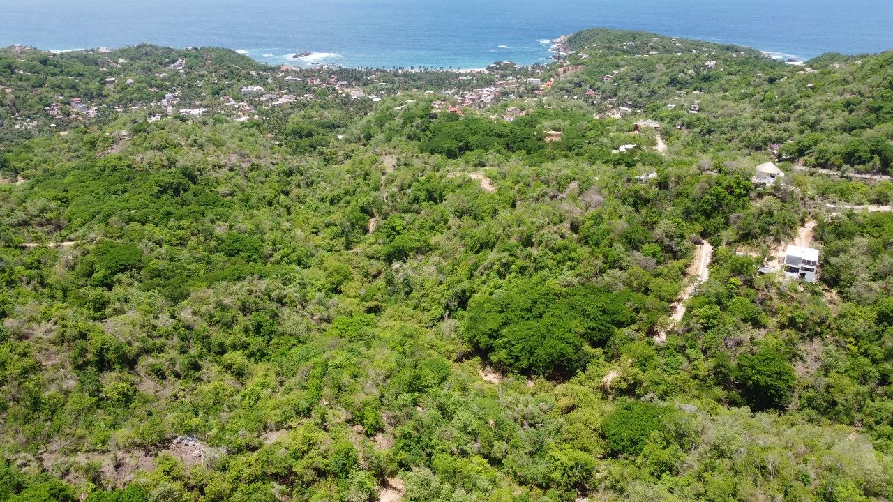
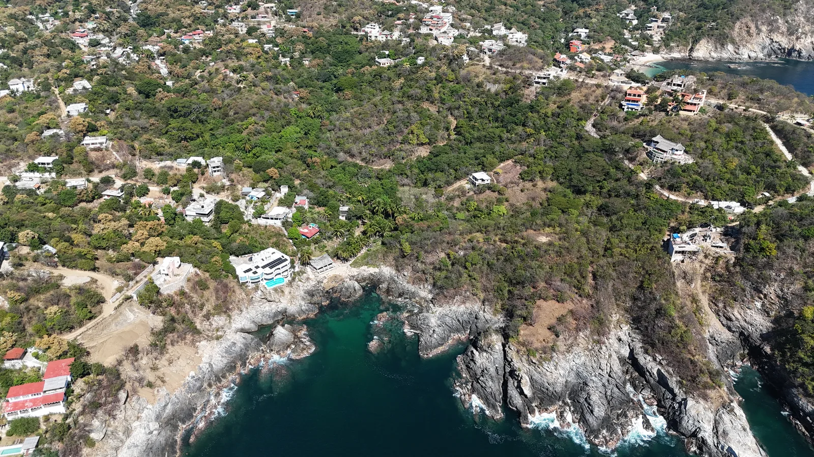
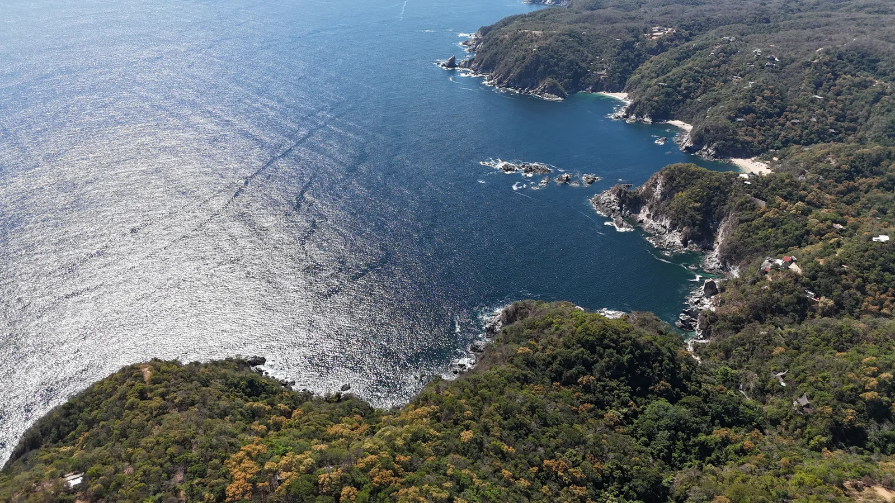
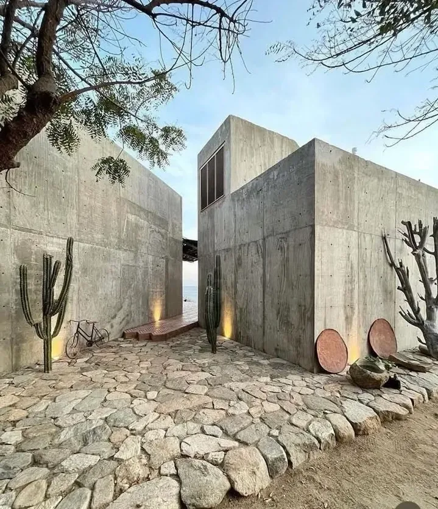
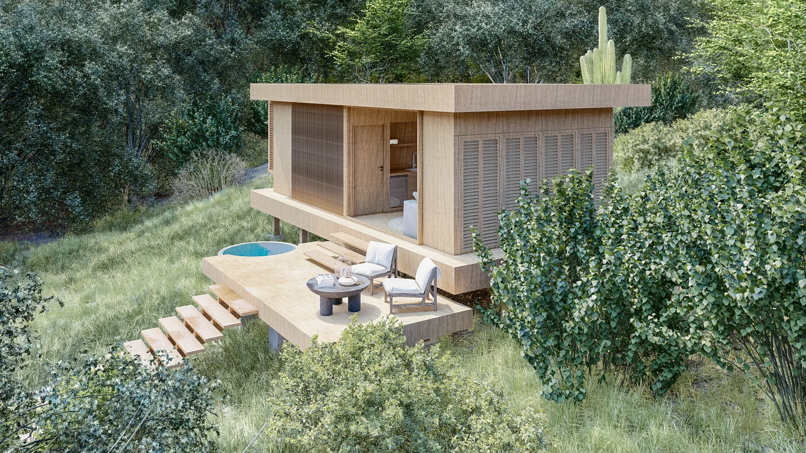
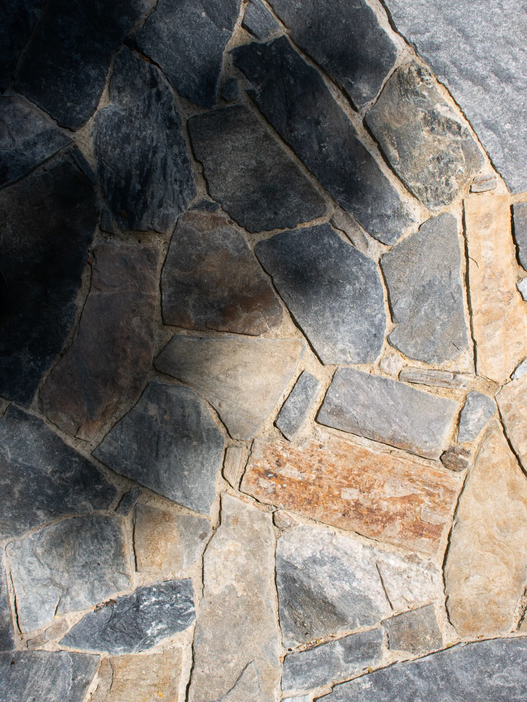

Costa de Oaxaca
Creamos espacios donde
la tierra habla
Proyectos

Azimut
Mazunte
Lotes en selva, a pasos del pueblo y la playa

Nabani
Puerto Ángel
Terrenos con vista al océano y Beach Club

Aldea Tao
La Boquilla
Sobre acantilados, frente al Pacífico

Depas Kora Preventa
Puerto Ángel
Departamentos eco-luxury con vista al mar

Serena Próximamente
Junto a Mazunte
Comunidad eco · lista de espera

Construcción
Llave en mano
Tu casa en la costa, con avance de obra en línea
Guías
◆ Terrenos en Mazunte: precios reales y qué revisar
◆ Cuánto cuesta construir en la costa